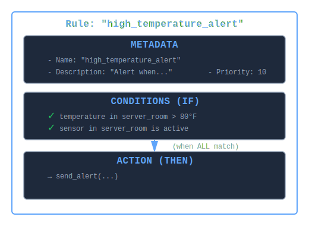

What is a Rule?¶
A rule is a declarative IF-THEN statement that defines what action to take when certain patterns of facts exist in the knowledge base. Rules are the "logic" that operates on facts (the "data").
Core Concept¶
Think of a rule as an automated detector and responder:
- IF these patterns exist in the knowledge base (conditions)
- THEN execute this action (perform block)
Unlike procedural code that you explicitly call, rules automatically fire when their conditions are satisfied.
Anatomy of a Rule¶
Basic Structure¶
rule "high_temperature_alert" do
# 1. METADATA (optional)
desc "Alert when server room temperature exceeds safe threshold"
priority 10
# 2. CONDITIONS (the IF part)
on :temperature, location: "server_room", value: greater_than(80)
on :sensor, location: "server_room", status: "active"
# 3. ACTION (the THEN part)
perform do |facts, bindings|
send_alert("High temperature: #{bindings[:value?]}°F")
end
end
Visual Representation¶

A rule consists of three parts: metadata (name, description, priority), conditions that must ALL match, and an action that executes when conditions are satisfied.
How Rules Differ from Other Programming Constructs¶
| Aspect | Rule | Function/Method | IF Statement | Event Handler |
|---|---|---|---|---|
| Invocation | Automatic (pattern match) | Manual (explicit call) | Manual (in code flow) | Event-driven (explicit bind) |
| When | When patterns exist | When called | When executed | When event fires |
| Conditions | Declarative patterns | Imperative checks | Imperative checks | Event type |
| Ordering | By priority/RETE | Call sequence | Code sequence | Event sequence |
| Scope | All facts in KB | Parameters passed | Local variables | Event payload |
Example Comparison:
# Function - Manual invocation
def check_temperature(temp)
if temp > 80
send_alert("High temp: #{temp}")
end
end
check_temperature(85) # Must explicitly call
# IF Statement - Part of code flow
temperature = sensor.read
if temperature > 80 && sensor.active?
send_alert("High temp: #{temperature}")
end
# Event Handler - Event binding
sensor.on(:reading) do |temp|
if temp > 80
send_alert("High temp: #{temp}")
end
end
# Rule - Declarative, automatic
rule "high_temperature" do
on :temperature, value: greater_than(80)
on :sensor, status: "active"
perform do |facts, bindings|
send_alert("High temp: #{bindings[:value?]}")
end
end
# Fires automatically when facts match!
Rule Lifecycle¶
1. Definition¶
Rules are defined using the DSL:
kb = KBS.knowledge_base do
rule "golden_cross_signal" do
on :ma_50, value: :fast?
on :ma_200, value: :slow?
perform do |facts, bindings|
if bindings[:fast?] > bindings[:slow?]
puts "Buy signal: Golden cross detected"
end
end
end
end
2. Compilation¶
When added to an engine, rules are compiled into a RETE network:
engine.add_rule(rule)
# Rule compiled into discrimination network
# - Alpha nodes for each pattern
# - Join nodes to combine patterns
# - Production node for action
3. Activation¶
As facts are added, the rule's conditions are evaluated:
engine.add_fact(:ma_50, value: 52.3)
engine.add_fact(:ma_200, value: 51.8)
# Conditions now satisfied - rule activated
4. Firing¶
During engine.run, activated rules fire:
5. Completion¶
Actions execute, potentially creating new facts:
perform do |facts, bindings|
# Can add derived facts
fact :signal, type: "golden_cross", timestamp: Time.now
# Can retract facts
retract old_signal
# Can call external code
execute_trade(bindings[:symbol?])
end
Rule Components in Detail¶
Metadata¶
Optional information about the rule:
rule "fraud_detection" do
desc "Flag transactions with suspicious patterns"
priority 100 # Higher priority = fires first (blackboard only)
# ... conditions and action
end
Name - Unique identifier
- Should be descriptive and actionable
- Use snake_case
- Example:
"reorder_low_inventory","escalate_critical_alert"
Description—Human-readable explanation
- Documents the rule's purpose
- Helpful for debugging and maintenance
- Example:
"Reorders products when inventory falls below minimum threshold"
Priority—Execution order (0-100 typical)
- Only affects
KBS::Blackboard::Engine - Higher numbers fire first
- Default: 0
Conditions (The IF Part)¶
Patterns that must ALL match for the rule to fire:
rule "order_fulfillment" do
# Condition 1: Must have pending order
on :order, status: "pending", product_id: :pid?, quantity: :qty?
# Condition 2: Must have inventory for same product
on :inventory, product_id: :pid?, available: :avail?
# ^^^^^^
# Join test - must match!
# Condition 3: Must NOT have existing shipment
without :shipment, order_id: :oid?
perform do |facts, bindings|
# Fires when ALL conditions satisfied
end
end
Condition Types:
- Positive - Pattern must exist:
on :temperature, value: > 80 - Negative - Pattern must NOT exist:
without :alert - Join - Variables link conditions:
:pid?in both conditions above
Action (The THEN Part)¶
Code executed when all conditions match:
perform do |facts, bindings|
# facts - Array of matched facts (in condition order)
# bindings - Hash of variable captures {:pid? => 123, :qty? => 5}
# Can access facts
order = facts[0]
inventory = facts[1]
# Can access bindings
product_id = bindings[:pid?]
quantity = bindings[:qty?]
available = bindings[:avail?]
# Can make decisions
if available >= quantity
ship_order(order)
else
backorder(order)
end
# Can add facts
fact :shipment, order_id: order[:id], shipped_at: Time.now
# Can retract facts
retract order
# Can call external code
notify_customer(order[:customer_id])
end
How Rules Work: The Inference Cycle¶
Rules participate in an automatic reasoning loop:

Rules execute within a continuous inference cycle: facts are added, the RETE network matches patterns, activated rules fire and potentially create new facts, triggering another cycle. Inference completes when no new facts are generated.
Example:
kb = KBS.knowledge_base do
# Rule 1: Detect high temperature
rule "detect_high_temp" do
on :temperature, value: greater_than(80), sensor_id: :sid?
without :alert, sensor_id: :sid?
perform do |facts, bindings|
# Add alert fact (triggers Rule 2)
fact :alert, sensor_id: bindings[:sid?], level: "high"
end
end
# Rule 2: Escalate alerts
rule "escalate_alert" do
on :alert, level: "high", sensor_id: :sid?
on :sensor, id: :sid?, critical: true
perform do |facts, bindings|
notify_ops(bindings[:sid?])
end
end
# Add facts
fact :temperature, value: 85, sensor_id: 42
fact :sensor, id: 42, critical: true
# Run inference
run
# → Rule 1 fires, creates :alert fact
# → Rule 2 fires (activated by new alert), notifies ops
end
Types of Rules¶
1. Detection Rules¶
Identify patterns and generate alerts:
rule "detect_fraud" do
on :transaction, amount: greater_than(10_000)
on :account, new_account: true
perform { flag_for_review }
end
2. Derivation Rules¶
Infer new facts from existing facts:
rule "derive_momentum" do
on :price, current: :curr?, previous: :prev?
perform do |facts, bindings|
change_pct = ((bindings[:curr?] - bindings[:prev?]) / bindings[:prev?]) * 100
fact :momentum, change_pct: change_pct
end
end
3. Reaction Rules¶
Take action when conditions arise:
rule "reorder_inventory" do
on :inventory, product_id: :pid?, quantity: less_than(10)
perform do |facts, bindings|
create_purchase_order(bindings[:pid?], quantity: 100)
end
end
4. State Machine Rules¶
Manage transitions between states:
rule "pending_to_processing" do
on :order, id: :oid?, status: "pending"
on :worker, status: "available", id: :wid?
perform do |facts, bindings|
order = query(:order, id: bindings[:oid?]).first
retract order
fact :order, id: bindings[:oid?], status: "processing", worker_id: bindings[:wid?]
end
end
5. Guard Rules¶
Prevent invalid states:
rule "prevent_duplicate_orders" do
on :order, customer_id: :cid?, product_id: :pid?, status: "pending"
on :order, customer_id: :cid?, product_id: :pid?, status: "processing"
perform do |facts, bindings|
cancel_duplicate_order(facts[0])
end
end
6. Cleanup Rules¶
Remove obsolete facts:
rule "expire_old_alerts" do
on :alert, timestamp: ->(ts) { Time.now - ts > 3600 }
perform do |facts, bindings|
retract facts[0]
end
end
Rule Patterns and Best Practices¶
Pattern: Rule Chaining¶
Rules can trigger other rules:
# Rule 1 creates fact that activates Rule 2
rule "detect_anomaly" do
on :sensor, value: :val?
perform { fact :anomaly, value: bindings[:val?] }
end
rule "escalate_anomaly" do
on :anomaly, value: greater_than(100)
perform { send_alert }
end
Pattern: Multi-Condition Filtering¶
Combine multiple conditions to narrow matches:
rule "qualified_lead" do
on :customer, revenue: greater_than(100_000)
on :interaction, customer_id: :cid?, type: "demo_request"
on :product_fit, customer_id: :cid?, score: greater_than(80)
without :opportunity, customer_id: :cid?
perform { create_opportunity }
end
Pattern: Exception Handling¶
Use negation to ensure preconditions:
rule "process_payment" do
on :order, status: "confirmed"
without :payment, order_id: :oid? # No payment yet
without :error, order_id: :oid? # No errors
perform { charge_customer }
end
Pattern: Temporal Rules¶
Time-aware reasoning:
rule "stale_data_warning" do
on :reading, timestamp: ->(ts) { Time.now - ts > 300 }, sensor_id: :sid?
perform do |facts, bindings|
alert("Stale data from sensor #{bindings[:sid?]}")
end
end
Pattern: Aggregation¶
Collect and analyze multiple facts:
rule "daily_summary" do
on :trigger, event: "end_of_day"
perform do
temps = query(:temperature).map { |f| f[:value] }
avg = temps.sum / temps.size.to_f
fact :summary, avg_temp: avg, date: Date.today
end
end
Rule Ordering and Priority¶
Priority in KBS::Blackboard::Engine¶
Controls which rules fire first when multiple are activated:
rule "critical_shutdown", priority: 100 do
on :temperature, value: greater_than(120)
perform { emergency_shutdown! }
end
rule "send_warning", priority: 50 do
on :temperature, value: greater_than(80)
perform { send_warning_email }
end
rule "log_reading", priority: 10 do
on :temperature, value: :val?
perform { log(bindings[:val?]) }
end
# With temp = 125, fires in order:
# 1. critical_shutdown (priority 100)
# 2. send_warning (priority 50)
# 3. log_reading (priority 10)
Priority in KBS::Engine¶
Priority is stored but not used for ordering - rules fire in arbitrary order.
When Priority Matters¶
Use priority for:
- Critical safety checks (priority 100)
- System integrity rules (priority 75)
- Business logic (priority 50)
- Logging and monitoring (priority 10)
Don't rely on priority for:
- Sequencing actions (use fact dependencies instead)
- Enforcing order between independent rules
- Complex orchestration (use state machines)
Rules vs. Queries¶
Rules are reactive (fire automatically), queries are proactive (you call them):
# Rule - Automatic
rule "alert_on_high_temp" do
on :temperature, value: greater_than(80)
perform { send_alert } # Fires automatically
end
# Query - Manual
temps = query(:temperature, value: greater_than(80))
temps.each { |t| send_alert } # You must iterate
When to use rules:
- Continuous monitoring
- Event-driven reactions
- Complex multi-condition patterns
- Automatic inference
When to use queries:
- One-time lookups
- Reporting and analysis
- Interactive exploration
- When you need explicit control
Performance Considerations¶
Rule Count¶
- 10-100 rules: Excellent
- 100-1,000 rules: Very good (network sharing helps)
- 1,000+ rules: Good (consider grouping by domain)
Condition Count¶
# Fast - 1-2 conditions
rule "simple" do
on :stock, symbol: "AAPL"
perform { ... }
end
# Typical - 2-4 conditions
rule "moderate" do
on :order, status: "pending"
on :inventory, available: greater_than(0)
on :customer, verified: true
perform { ... }
end
# Slower - 5+ conditions (but still efficient with RETE)
rule "complex" do
on :order, ...
on :customer, ...
on :inventory, ...
on :pricing, ...
on :shipping, ...
perform { ... }
end
Condition Ordering Impact¶
Huge impact - order by selectivity:
# Bad - general first (creates many partial matches)
on :sensor # 1000 facts
on :alert, level: "critical" # 1 fact
# → 1000 tokens created
# Good - specific first (creates few partial matches)
on :alert, level: "critical" # 1 fact
on :sensor # 1000 facts
# → 1 token created
Action Complexity¶
Keep actions lightweight:
# Good - fast action
perform do |facts, bindings|
fact :alert, level: "high"
end
# Acceptable - moderate work
perform do |facts, bindings|
send_notification(bindings[:user_id?])
end
# Avoid - heavy work in action
perform do |facts, bindings|
# Don't do this in action:
complex_calculation()
database_batch_update()
api_call_with_retry()
# Instead, add a fact to trigger async processing
fact :work_item, type: "heavy_task", data: bindings
end
Common Pitfalls¶
1. Forgetting "All Conditions Must Match"¶
# This rule NEVER fires if there's no :inventory fact
rule "process_order" do
on :order, status: "pending"
on :inventory, available: greater_than(0) # What if no inventory fact?
perform { ship_order }
end
# Fix: Use negation or optional patterns
rule "process_order" do
on :order, status: "pending"
without :inventory, available: less_than(1) # OK if no inventory fact
perform { ship_order }
end
2. Expecting Sequential Execution¶
# Rules don't execute in definition order
rule "step1" do ... end
rule "step2" do ... end # NOT guaranteed to fire after step1
# Use fact dependencies instead
rule "step1" do
perform { fact :step1_complete }
end
rule "step2" do
on :step1_complete # Depends on step1
perform { ... }
end
3. Infinite Loops¶
# Bad - creates infinite loop
rule "loop" do
on :counter, value: :val?
perform do |facts, bindings|
# Retracts and re-adds fact → rule fires again → infinite loop!
retract facts[0]
fact :counter, value: bindings[:val?] + 1
end
end
# Fix: Add termination condition
rule "loop" do
on :counter, value: less_than(10)
perform do |facts, bindings|
retract facts[0]
fact :counter, value: bindings[:val?] + 1
end
end
4. Side Effects in Conditions¶
# Wrong - side effects in predicate
counter = 0
on :stock, price: ->(p) {
counter += 1 # Bad! Runs many times
p > 100
}
# Right - side effects in action
on :stock, price: greater_than(100)
perform { counter += 1 }
5. Modifying Facts Instead of Retracting¶
# Wrong - changes don't trigger rules
fact = engine.facts.first
fact[:status] = "processed" # No rules fire
# Right - retract and re-add
retract old_fact
fact :order, status: "processed" # Rules fire
Testing Rules¶
Unit Testing¶
Test rules in isolation:
def test_high_temp_alert
kb = KBS.knowledge_base do
rule "alert" do
on :temperature, value: greater_than(80)
perform { fact :alert, level: "high" }
end
fact :temperature, value: 85
run
end
alerts = kb.query(:alert)
assert_equal 1, alerts.size
assert_equal "high", alerts.first[:level]
end
Integration Testing¶
Test rule interactions:
def test_alert_escalation
kb = KBS.knowledge_base do
rule "create_alert" do
on :temperature, value: greater_than(80)
perform { fact :alert, level: "high" }
end
rule "escalate_alert" do
on :alert, level: "high"
on :sensor, critical: true
perform { fact :escalation, priority: "urgent" }
end
fact :temperature, value: 85
fact :sensor, critical: true
run
end
assert kb.query(:alert).any?
assert kb.query(:escalation).any?
end
Rule Design Principles¶
1. Single Responsibility¶
One rule, one purpose:
# Good—focused
rule "reorder_low_inventory" do
on :inventory, quantity: less_than(10)
perform { create_purchase_order }
end
# Bad—does too much
rule "inventory_management" do
on :inventory
perform do
check_quantity
update_forecasts
notify_suppliers
generate_reports
end
end
2. Declarative Over Imperative¶
Express what, not how:
# Good—declarative
rule "qualified_customer" do
on :customer, revenue: greater_than(100_000)
on :engagement, score: greater_than(80)
perform { create_opportunity }
end
# Less ideal—imperative
rule "check_customer" do
on :customer
perform do |facts|
if facts[0][:revenue] > 100_000
engagement = query(:engagement, customer_id: facts[0][:id]).first
if engagement && engagement[:score] > 80
create_opportunity
end
end
end
end
3. Explicit Over Implicit¶
Make conditions explicit:
# Good—clear dependencies
rule "ship_order" do
on :order, status: "paid"
on :inventory, available: greater_than(0)
without :shipment # Explicit: no existing shipment
perform { ship }
end
# Bad—hidden assumptions
rule "ship_order" do
on :order, status: "paid"
perform { ship } # Implicitly assumes inventory exists
end
Further Reading¶
- Writing Rules Guide - Detailed best practices
- Rules API Reference - Complete method documentation
- DSL Reference - Rule definition syntax
- Pattern Matching - Condition patterns
- RETE Algorithm - How rules are compiled and executed
Summary¶
A rule is:
- A declarative IF-THEN statement that automatically fires when patterns match
- Composed of conditions (patterns to match) and action (code to execute)
- Automatically activated by the RETE engine when facts satisfy conditions
- The "logic" that operates on facts (the "data") in a knowledge base
- Available with optional priority for execution ordering (blackboard only)
Think of rules as automated sentinels that continuously watch for specific patterns and react instantly when those patterns appear.